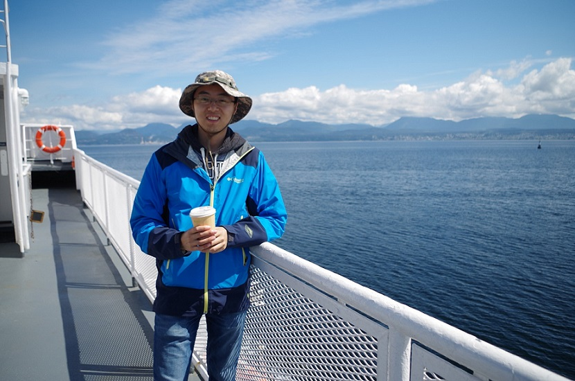

About Me
I will be a CNRS postdoctoral researcher on developmental biology at ENS-Paris starting this fall.
I completed my undergraduate training in Theoreical and Applied Mechanics from Peking University in Beijing. Then I studied at University of Utah. Now I am in the Ph.D. programme in Applied Mathematics at UBC in Vancouver.
Problems emerging from modern natural and social sciences display rich behavior. I believe that a rigorous mathematical approach is the key to understanding the structure underlying these phenomena. I focus on both methodology and applications. Currently I work with Prof. James J. Feng on modeling interfacial dynamics of complex fluids. I am also interested in mathematical biology and scientific computing.
Past problems I have worked on include elasto-hydrodynamic lubrication and machine learning controllers for humanoid robots. Apart from research, I take part in a variety of teaching and science outreach activities. I also enjoy learning about millitary history, in particular naval history.
